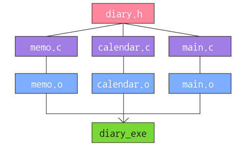
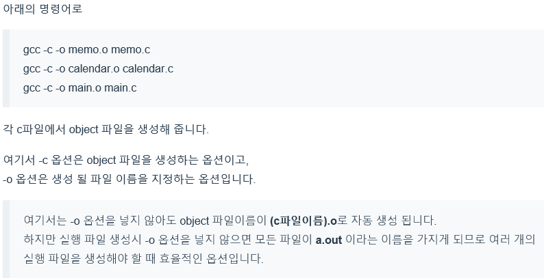
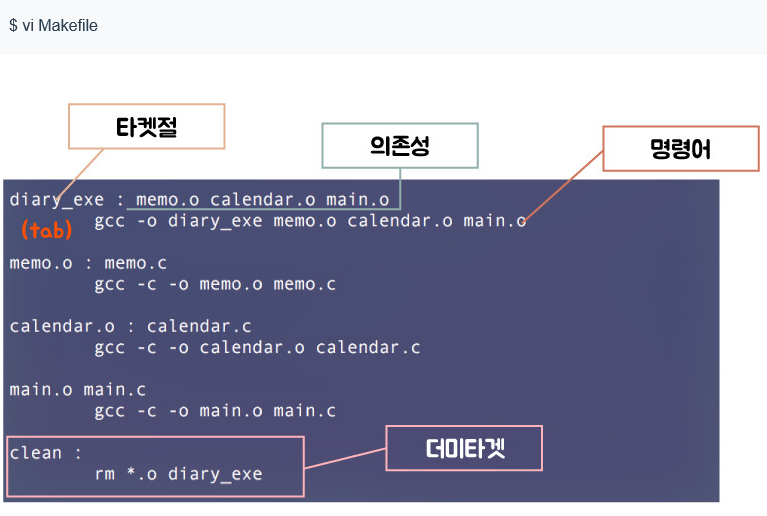

What is Makefile & Make ?
-
Why use makefile ?
- 각 파일에 대한 반복적 명령의 자동화로 인한 시간 절약
- 프로그램의 종속 구조를 빠르게 파악 할 수 있으며 관리가 용이
- 단순 반복 작업 및 재작성을 최소화
-
For example

- c 파일에서 object 파일 생성하기
위의 사진에서 우리는 ncurses를 이용하고 있으므로 각각 -lncurses 를 붙여 줘야 합니다!!
각각 파일에 대해서 object 파일 생성후 g++ -o diary_exe main.o memo.o calendar.o
-lncurses 를 또한 입력해줘야 한다. - make를 이용한 컴파일 과정
주의할 점은 makefile에서 위의 사진의 tab 부분은 반드시 tab을 써야합니다.
이렇게 작성후 make 명령어 하나로 컴파일이 가능합니다!
여러개의 파일을 컴파일 할때 make 명령어 하나로 실행할수 있다? 가능합니다!
make 는 파일간의 종속관계를 파악하여 Makefile 에 적힌대로 컴파일러에 명령하여
SHELL 명령이 순차적으로 실행될 수 있게 합니다.
make을 쓰면 다음과 같은 장점이 있습니다.
예시를 통해서 기본적인 컴파일 방법과 make를 이용한 컴파일 방법을 비교해 보겠습니다.